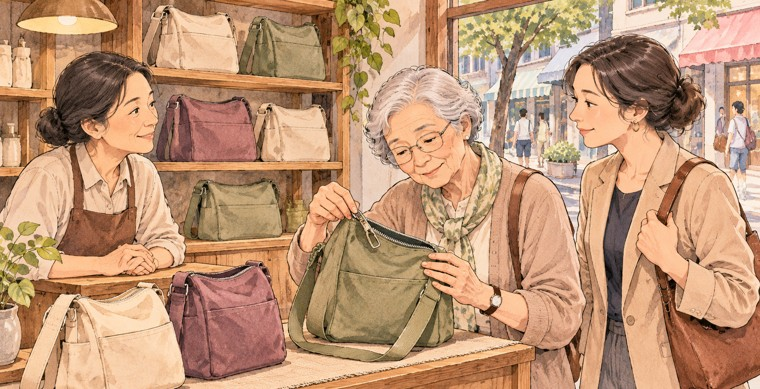

2025 年 5 月 27 日，香港政府公布 30 项银发经济措施，涵盖五大范畴，包括消费和产业发展。
这让一家虚构的箱包品牌有理由留意年长消费者，但不能证明这款产品有需求，不代表政府背书，也不表示广告一定要标示年龄。
虚构课堂情境。 一家香港小型箱包品牌准备推出轻便日常背包，配有容易握住的拉链片和较宽的肩带。宣传所述的实际功能已经核实，产品并非医疗用品。
年长顾客可能自己选购，也可能收到成年子女送的礼物。店主可先小规模试行一则上市讯息，手上有两款同样可行的设计稿。
两款的袋、价格、易读字体、照片和投放位置相同，均自然呈现年长人士。只有主标题不同：A 点明年龄层；B 直接说明实用好处。两款都没有刻意居高临下，也不保证奏效。
你会先测试 A 还是 B？说明你希望打动谁，以及哪项具体反应会令你改变主意。
店主发现，最初的非正式意见主要来自替父母买礼物的成年子女。第二次交流纳入了预期使用者。以下三则虚构意见呈现不同角度：
这些对话只作示例，不是具代表性的调查，也不能证明哪个标题较好卖。题目没有提供销售结果。
你会维持或更改原来对 A 或 B 的选择？指出预期使用者的哪项反应足以支持你的选择，不要只凭买礼物的人的意见。
买礼物的人或许喜欢一眼就能判断是否合适的提示；实际使用的人却可能更在意功能、外观或自己选择的空间。购买者和使用者有时是同一人，有时不是。
新资料没有证明送礼的人想错了，只说明单靠他们的反应，不能判断讯息能否打动预期使用者。若两者都重要，试点就应听取双方意见。
两位使用者的意见指向不同方向：一位重视实用功能，不会主动找年龄标示；另一位喜欢产品照顾同龄人士，也想知道具体有何不同。两人的意见都不能代表所有年长顾客。
不能因此推论年长人士一概反感年龄标示、一概欢迎，或在自主程度、活动习惯和需要上都相同。准确而中性的年龄资讯可以有用，突出实际好处的说法也可以有用；适不适合，要看实际客群和产品。
若你推测预期使用者会看出 A 与自己相关，且乐见这样的描述，可选 A；不能只因成年子女容易留意到便选它。若你推测 B 清楚说出好处，能让使用者明白为何值得考虑，可选 B。几则意见还不足以证实任一假设。
试点前先订可观察的结果，例如预期使用者能否准确说出产品特点、觉得文字与自己相关，以及愿不愿意试用。如果同一讯息一再令人困惑，或令人觉得产品与自己无关，就值得重考。不要把自行订出的成功门槛，说成是案例衡量的结果。
同步纳入预期使用者和买礼物的人，分开看两组反应。产品、功能声称、价格、呈现方式和投放位置应保持相近。若同一人看两款设计稿，应调换先后次序，避免顺序一直偏向某款。
这项小型试点并不是完整的现场因果实验。其后的购买、退货和使用者意见，可提供比少量方便访谈更有力的证据。下一轮可尝试在主标题强调实用好处，再补上准确的年龄资讯，但仍需测试；不能用这个变体避开眼前的选择。
揭示新资料前，先请同学暂选 A 或 B，指出目标受众和会令自己改判的证据。其后问：新资料说明讯息选错了，还是原先的证据漏掉了重要声音？
有说服力的答案会尊重使用者自主选择、视各则意见为不同的质性线索，并不宣称有一个放之四海而皆准的标题。两款设计稿都是合理的测试起点。
品牌、袋、宣传讯息和意见均属虚构，不暗示医疗功效、消费者刻板印象或销售预测。